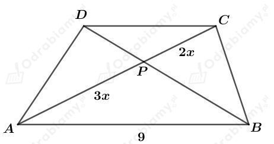

a)
Dany jest sześciokąt foremny o boku długości 1.
Na podanym sześciokącie opisano koło o promieniu długości R. Promień ten ma długość równą długości boku tego sześciokąta, czyli R=1.
Obliczmy pole tego koła. Mamy:
W podany sześciokąt wpisano koło o promieniu długości r. Promień ten ma długość równą długości wysokości trójkąta równobocznego o boku długości 1. Mamy więc:
Obliczmy pole tego koła. Mamy:
Wyznaczmy różnicę otrzymanych pól. Mamy:
b)
Dany jest pewien wielokąt foremny o boku długości a.
Na podanym wielokącie opisano koło o promieniu długości R.
W podany wielokąt wpisano koło o promieniu długości r.
Narysujmy fragment tego wielokąta. Mamy:
Korzystając z twierdzenia Pitagorasa mamy:
czyli
Wyznaczmy różnicę pola koła opisanego na tym wielokącie i polem koła wpisanego w ten wielokąt. Mamy:
Rysunek:
Zauważmy, że
Rozważając trójkąty AED i DFC mamy:
Wyznaczmy miarę kąta zawartego między wysokościami DE i DF tego rombu. Mamy:
Rysunek:
Komentarz do rysunku:
Rozważmy trójkąt ABP. Długości boków tego trójkąta są równe 4 i 8, a kąt zawarty między tymi bokami ma miarę 60o, czyli podany trójkąt jest trójkątem prostokątnym o kątach miary 30o, 60o, 90o.
Korzystając ze związku między długościami boków w trójkącie o kątach 30o, 60o, 90o wiemy, że
Korzystając z twierdzenia Pitagorasa dla trójkąta ABD otrzymujemy:
Wyznaczmy obwód tego równoległoboku. Mamy:
Rysunek:

Zauważmy, że na mocy cechy podobieństwa KKK, trójkąty ABP i CDP są podobne. Mamy stąd:
Odp. Krótsza podstawa tego trapezu ma długość 6 cm.
Rysunek:
Korzystając z twierdzenia Pitagorasa dla trójkąta AEC mamy:
więc
Wyznaczmy pole tego trapezu. Mamy:
Zauważmy, że trójkąt EBC jest trójkątem prostokątnym równoramiennym, więc:
więc również
Wyznaczmy obwód tego trapezu. Mamy:
a)
Rysunek:
Punkty E i F są środkami - odpowiednio - boków AD i BC tego trapezu.
Uzasadnimy, że
Zauważmy, że:
Dodając stronami powyższe równości otrzymujemy:
Zauważmy, że
Zatem otrzymujemy:
czyli
b)
Rysunek:
Wiedząc, że |EF|=10 mamy:
Obliczmy pole tego trapezu. Mamy: